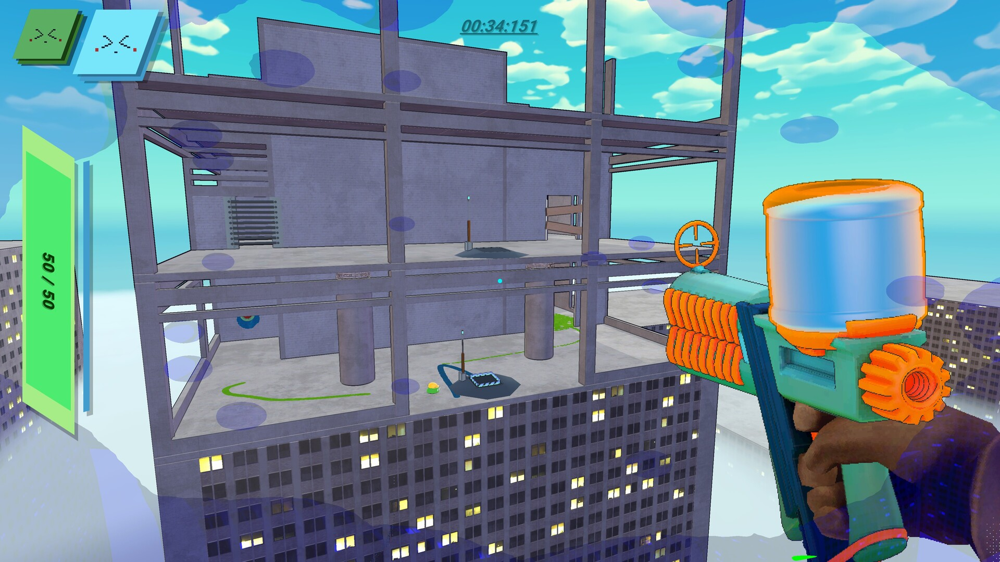
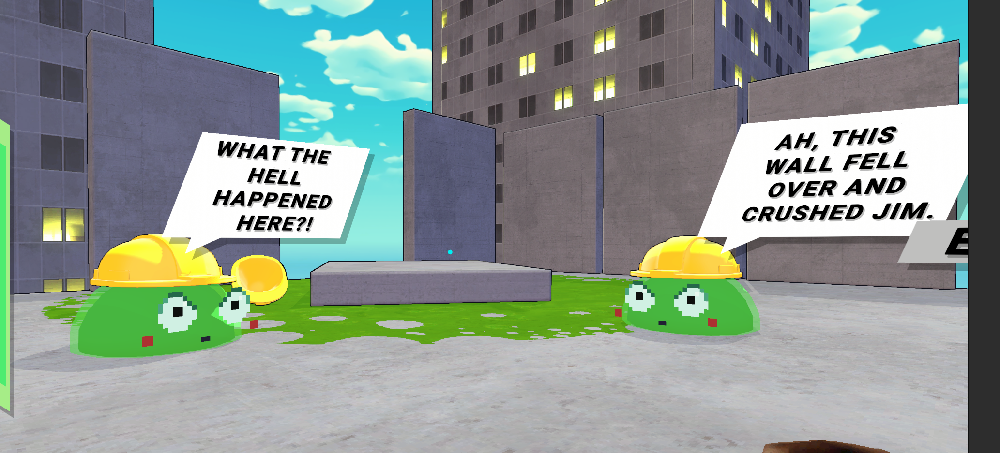
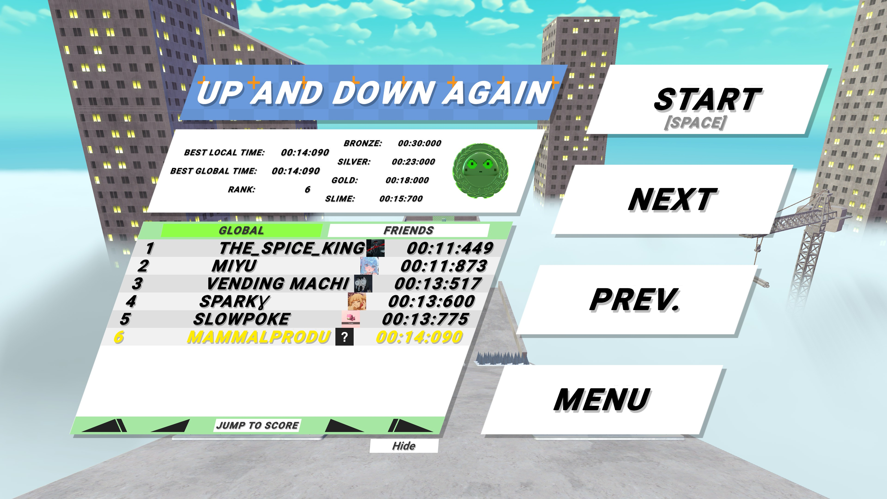
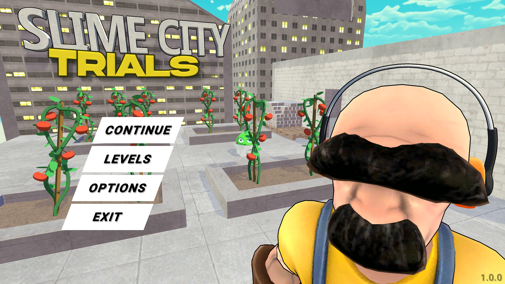
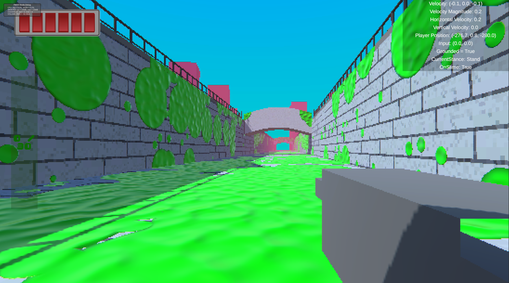
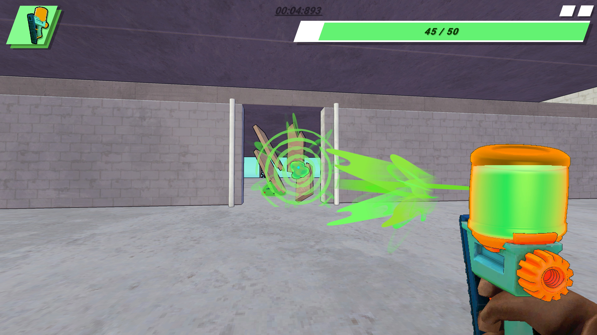

SLIME CITY: TRIALS
A movement game where slime removes friction.
Overview
Slime city is a movement game where you need to complete each level as fast as possible. As the name implies, the city is made and run by slimes, and you can use these slimes to either gain speed or maintain momentum by being covered in slime.

Contributions
For Slime City: Trials, I was the designer, programmed the main systems and also created most of the levels. That was just how it ended up playing out.
Originally, I started with the character controller, which took me 3 attempts to get right. I started trying to create one using the Unity Character Controller, but that came with some very annoying limitations, so I ended up building a controller on the Kinematic Character Controller asset from the Unity asset store, which was a great foundation.
The controller definitely took more work than anything else in the game to get right, and I think is also by far the best part of the game. In the end there were over 80 parameters you could edit on the player's movement script alone.
Other things I did on this project include:
- Fully programmed the level loading and data management systems.
- Use art assets to create most levels.
- Create and implement most UI and UI assets.
- Create and implement most SFX.
- Gameplay programming for most standalone mechanics such as slime sliding, grind rails and more.


Screenshots



